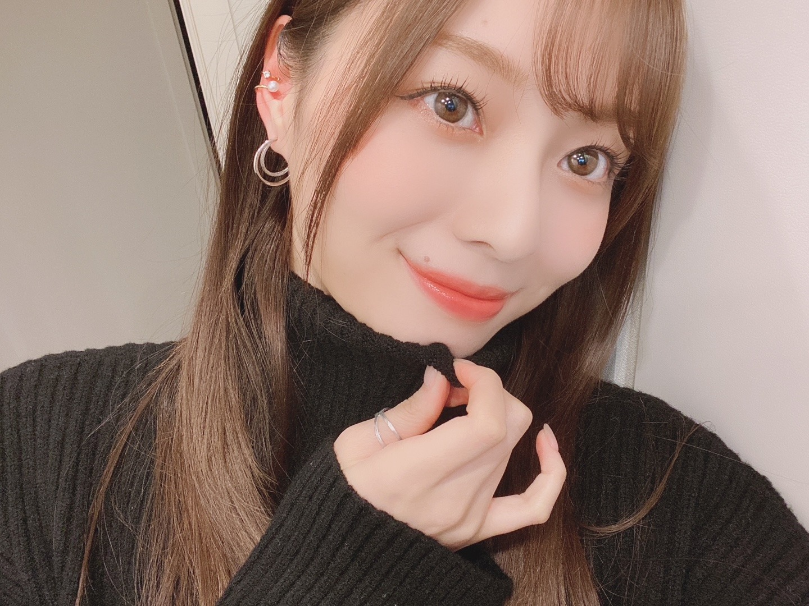
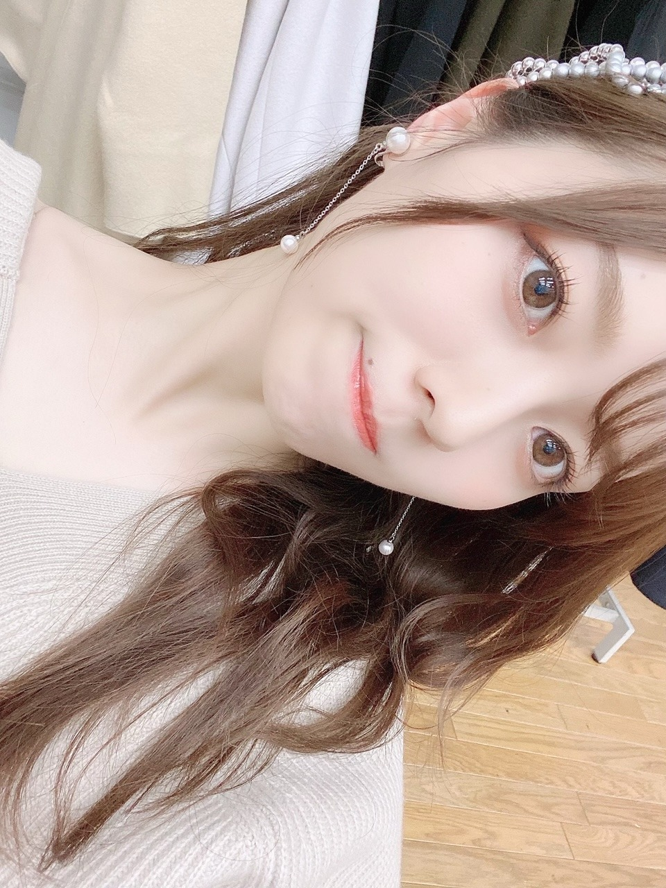
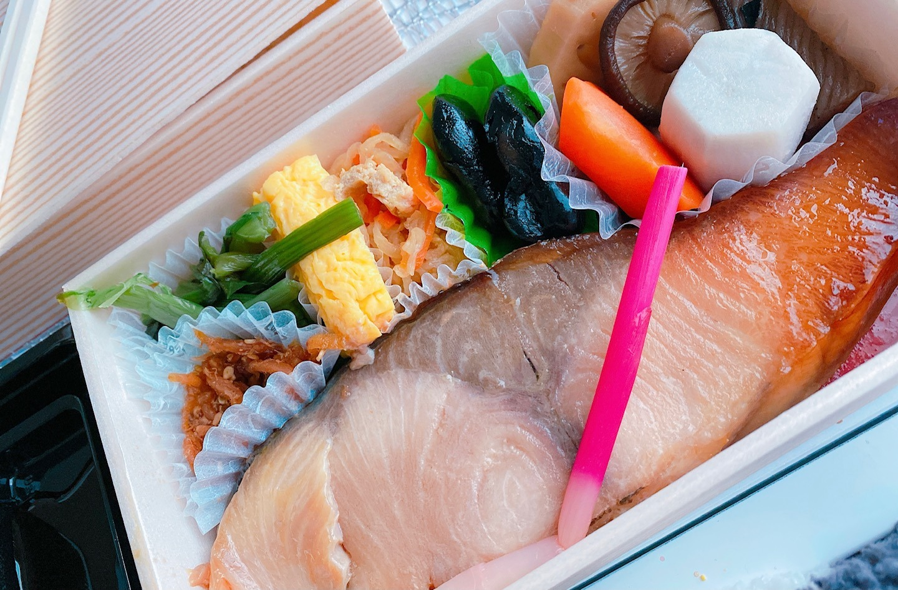
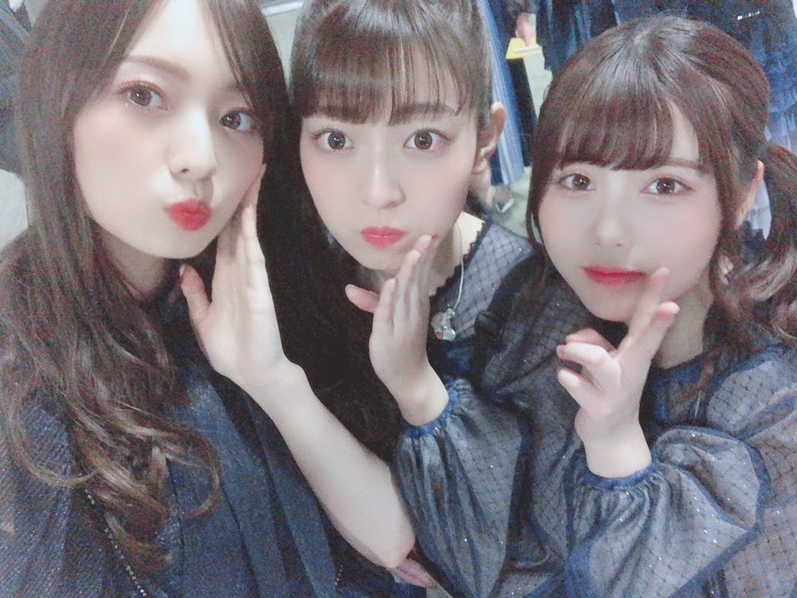
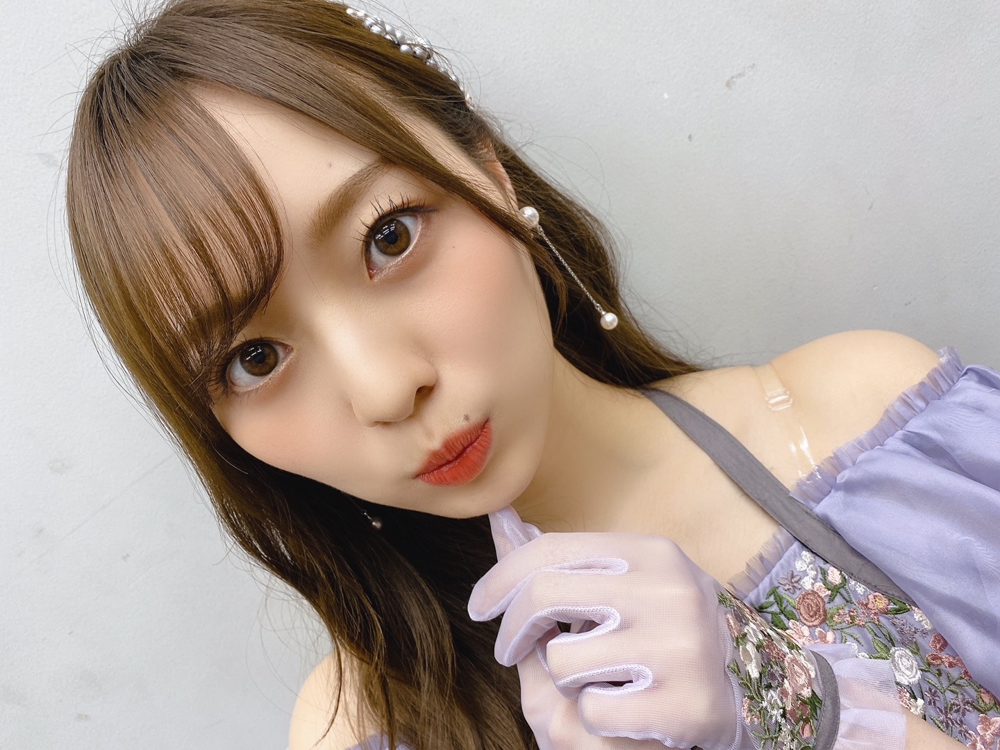

今年もありがとうございました！

お久しぶりになってしまいました。
大晦日ですね。
うわあ、あまり実感がありません。
ベッドの中でオールナイトニッポンを聴きながら書き直ししてまする。
納豆討論面白すぎるなあ。
わたしも今年は納豆とお餅一緒にたべてみようかなあ。
いやあしかし二人とも落ち着く声すぎて眠くなってきました。最高だ。
新内姉さん、くぼ、お疲れ様です︎︎︎︎✌︎

輝く！日本レコード大賞
ありがとうございました！
今年もあのステージに立たせて頂き
本当に幸せでなりませんでした。
客席から見るステージの壮大さと
生演奏の素晴らしさには 毎年感動の連続で
胸の高なるあの感覚は
とても言葉では言い表せられないくらいのものがあります。
オープニングから、
気持ちが高まりに高まって涙が出そうになりました、、
「世界中の隣人よ」
皆様に届きましたでしょうか？
一人一人の心に寄り添えていたらいいな。
優秀作品賞、
本当にありがとうございました。
LiSAさん、改めてレコード大賞本当におめでとうございます！
素敵な歌声に、とても感動しました。
本当に素敵だったなあ。
これからも皆様に
素敵な音楽を届けていけるよう

わたしがいちばん好きなお弁当です。
ぶりの照り焼き、、最強だよ、、
観劇させていただきました！
会場にいるお客様の姿、サイリウムの光を見たら
もう色んな感情が湧き出て大変でした...
涙涙でした。感動しっぱなし。
久しぶりの光景だったなあ。
次々披露される楽曲。
パフォーマンスに圧倒され、可愛さにやられ、
もうとにかく楽しかった！
お客さんとして、
ただただひたすら楽しんでしまいました！
幸せな時間を、
本当にありがとうございました！
たまみも座長、お疲れ様！❤︎
告知◎
ー雑誌
▽「with」２月号 発売中！
・withモデルズ新年の所信表明
・コートの中身は週4パンツ 週1デートスカート
の企画に出てます︎︎︎︎✌︎
毎月の撮影が楽しくって仕方ないです！
今月号も見どころ盛りだくさん！ぜひ❤︎
▽「BRODY」 ２月号 発売中！
３期生で表紙を務めさせていただいております。
ロングインタビューには 皆の思いが詰まっています。ぜひ、ゆっくりじっくり読んでいただけたら嬉しいです。
お正月のひとときのお供にぜひ。
▽１／４ 「日経エンタテインメント！」
やま、くぼ、飛鳥さん、生田さんと
表紙を務めさせていただきます。
楽しい撮影だったなあ。
▽１／４「週刊プレイボーイ」
やま、くぼ、もも、よだ、私で
表紙を務めさせていただきます。
５色の衣装が目を引く表紙です！
▽１／５ 「乃木坂46×週刊プレイボーイ2021」
今年もまるごと乃木坂46！
本当にありがたいです。嬉しい。
対談、見応え読み応えたっぷりです。
▽１／２３ 「アップトゥボーイ」
久しぶりに登場です！とっても嬉しい！
相変わらず楽しすぎる現場で
アップトゥボーイ様の愛をとても感じました。
お気に入りの写真たちが沢山なので
楽しみにしててください。
ーＴＶ
▽１／３ フジテレビ系 23:45〜
「ラスボスさぁぁぁん！」
とっても楽しすぎる収録でした。
色々なラスボスさんが登場します。
新年明けてすぐの放送になります。
ぜひ、見てください☀︎
ーラジオ
▽１／１０ NHKラジオ第1 20:05〜
「らじらー！サンデー」
久しぶりな気がします。
らじらー！お邪魔させていただきます☀︎
新年開けて一発目のラジオなので
たくさんお話できたらいいな。お楽しみに！
ー
▽１／９ リーディングシアター「星の王子さま」
初めて朗読劇に挑戦します。
いつかチャレンジしてみたいと思っていました。
すぐそこまで本番が迫ってきております。
緊張感持って、楽しみながら
新しい自分を見つけられたらなと思っています！
新年ひとつめの挑戦。精一杯頑張ります。
もうゲットしてくださいましたでしょうか？
DVD見て待っててくださいね☀︎
未央奈さんが卒業発表されました。
あまりに突然で、驚きで
中々実感が湧かない毎日です。
笑いのツボが合う瞬間が
とても嬉しいんです。
未央奈さんを見ていると
かっこいいな〜と思う瞬間がたくさんあります。
全くブレない。かっこいい。
そんな芯の強さが大好きです。
弱さを見せない強さが好きです。
同じ女性として、とても憧れます。
私たち後輩を妹のように可愛がってくれる未央奈さん。
卒業されるその日まで、
たくさんら甘えられたらいいな☀︎

懐かしい〜
さて、本日で２０２０年も終わりを迎え
明日から２０２１年の幕開けです！
あっという間でしたか？
長く感じましたか？
振り返ると
たくさんの愛おしい時間達で溢れています。
４６時間テレビの開催、
初めての配信シングルのリリース。
今の環境に応じて出来ることを、
新しいことに挑戦した一年でもありました。
個人的には
写真集の発売、
ドラマ、そして映画
「映像研には手を出すな！」への出演、
専属モデルを務めさせていただいている
雑誌withでの表紙、
とても貴重な経験をたくさんさせて頂けた一年でした。
自分の未熟さに悔しくなったり、
もっとやりたい！やってやる！と
熱い気持ちがふつふつと静かに自分の中で芽生えた時間も沢山。
色々あった一年でした。
下向きになってしまう時間もありました。
けど、幸せだと感じる瞬間も沢山あった！
辛い気持ちが目立ってしまう時もある。
けど、そんな時間も全部
幸せだと感じた時間で上書きしたいです。
振り返った時に
楽しかった時間をたくさん思い出して
２０２０年も楽しかったな、幸せだったなと、
そう感じられるように！
前向きに。
常に前向きに！
考え方次第で変えられることは
少しばかりあるはずです。
どんなときも 冷静に、落ち着いて、
一旦立ち止まって時間を使い考え
前向きに プラスに 感情を持って行けるように
そんな日々を送れるように。
皆様、
今年は本当にお世話になりました。
会えない中でも皆様の暖かさを感じられる瞬間がたくさんありました。
何度も救われて 何度も力を頂きました。
それを活力に、この日を迎えることが出来ました。
本当に、本当にありがとうございました！
感謝でいっぱいです。
来年もきっと
楽しいこと、幸せなこと
たっくさん待っています！
待っているはずです。
その中の時間の一つに
私たち乃木坂46がいられますように。
一緒に楽しんでいきましょう❤︎
昨日も、今日も、明日も、
これからもずーーーっと！
乃木坂46が大好き！
日に日に愛が増すばかりで
愛おしくて尊くてたまらなくて
大切で宝物でなりません！
苦しいくらいに 乃木坂が好きだ！
年越しCDTVも
お楽しみに☀︎

それでは。
また書きます。
皆様、良いお年を！
Original：https://www.nogizaka46.com/s/n46/diary/detail/59614?ima=4935&cd=MEMBER